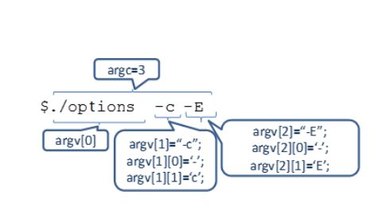

ANSIC C (i nie tylko)
Notatki dotyczące języka C (oraz bardziej niskopoziomowych aspektów C++)
Kompilacja
Najpopularniejszym kompilatorem jest gcc
gcc [-options] [source_files] [object_files] -o output_file
Podstawowe flagi
| Flaga | Opis |
|---|---|
| -c | Preprocessing, compilation, assembly producing a binary object file (.o) |
| -S | Preprocessing and compilation producing an assembly language file |
| -E | Preprocessing only sending the output to the standard output (terminal) |
| -o plik | nazwa pliku wyjściowego |
| -Isciezka | Ścieżka dla plików nagłówkowych (bez spacji, np -I/usr/lib) |
| -lNAZWA | Biblioteka do której mamy linkować program, mówimy kompilatorowi do jakich bibliotek linkujemy program, np -lm linkuje do biblioteki libm.so |
| -v | Verbose gcc opisuje kroki kompilacji |
Na ogół po prostu kompilujesz w jednej fazie
gcc -o executable programik.c
Zmienne
| Nazwa | Rozmiar | Czym jest |
|---|---|---|
| int | 32b | Liczba całkowita |
| float | 32b | Liczba zmiennoprzecinkowa |
| double | 64b | Dokładniejszy float |
| char | 1B | =8b Jednobajtowe liczby całkowite 0-255, używane także (głównie) do przechowywania znaków |
| bool | 1(true) lub 0(false) logika (wymaga stdbool.h) |
|
| void | - | Typ pusty |
int
Sposoby zapisu liczb:
- zwykły: 2, 456, 42 itp.
- ósemkowy 010 (8) 015 (13) 0100 (64)
- szesnastkowy 0x12 (18) 0xF (15)
float
Sposoby zapisu liczb:
- zwykły: 2.43, 456, 3.14 itp.
- naukowy(wykładniczy) 6e10 (6*1010) 1.5e2 (150)
char
Zapis:
- zwykły: char letter1 = 'a';
- jako kod ASCII: char letter2=97; 97 to a w kodzie ASCII *putchar(char)-wypisuje char/tablice charów a po niej daje enter
Specyfikatory
signed -liczba będzie także mogła być ujemna unsigned -liczba będzie nieujemna Short i long są wskazówkami dla kompilatora, by zarezerwował dla danego typu mniej/więcej pamięci
np.:
signed char a; /*zmienna a przyjmuje wartości od -128 do 127*/
unsigned char b; /*zmienna b przyjmuje wartości od 0 do 255*/
signed int i = 0; // to samo co: int i = 0;
Wskaźniki-zmienne przechowujące adres zmiennej
int *px;//tworzymy zmienną przechowującą wskaźnik prowadzący do
int-a;
int x=7;
&x //zwraca adres zmiennej
*px;//weź wartość znajdującą się pod danym adresem
Wskaźniki i const
int j = 3 ;
int ∗ const pj2 = &j ;
++(∗pj2 ) ;//tylko to się da
int j = 3 ;
const int ∗ const pj3 = &j ;
//++pj3 ; // nie da sie − const
//++(∗pj3 ) ; // nie da sie − const
//pj3 = &i ; // nie da sie − const
printf( " const : %d\n " , ∗ pj3 )
Podsumowując:
int * zmienny_wzkaznik_zmienny_int;
int const * zmienny_wzkaznik_staly_int;
int *const staly_wzkaznik_zmienny_int;
int const *const staly_wzkaznik_staly_int;
//Inaczej:
const char *const stringTable[] = {
"Hello",
"World",
"This",
"Is",
"A",
"Table",
"Of",
"Strings"
};
stringTable[0]="abc"; //Niedozwolone
stringTable[0][0]='a'; //Niedozwolone
char *const stringTable2[] = {
"Hello",
"World",
"This",
"Is",
"A",
"Table",
"Of",
"Strings"
};
stringTable2[0]="abc"; //Niedozwolone
stringTable2[0][0]='a'; //Dozwolone
Tablice i alokowanie pamięci
Definiowanie tablic
int tab[2];
tab[0]=32; tab[1]=3;
int tab[]={32,3};
int tab[2][3]={
{2,3,5},
{1,3,4}};////definiowanie tablicy
int tab[2][3]={
{4},
{5}};/////reszta to zera
int tab[2][2]={1,2,3,4};
int tab[2][2]={1,2,3}; //reszta to zera
int niePoKol [12]={1 ,2 , [5]=3 , 4 };//reszta to zera
lub dla tablic znaków
char slowo[]=”Ala”;
//(od C99 mamy tablice VLA)
int liczbaEl=4;
int tablica[liczbaEl];
int sum2dArr(int liWierszy ,int liKolumn , int vla
[liWierszy][likolumn]) ;
Tablica a wskaźnik - w praktyce zmienna trzymająca tablicę jest wskaźnikiem na jej pierwszy element
char tab[]= " Ala ";
// Zmienna tab zawiera wskaźnik do
// pierwszego elementu tablicy
printf(„%c”,tab+2)//wydrukuje a
Tablice dynamiczne+ Dynamiczna Alokacja pamięci
malloc( rozmiar_w_bajtach ); – zwraca wskaźnik do zaalokowanego xobszaru lub NULL (gdy zbraknie pamięci albo innym błędzie). xPrzydzielona pamięć ma nieokreśloną zawartośćcalloc( ile_el, rozmiar_elementu ); – to samo co malloc, tyle, że xprzydzielona pamięć zainicjowana zeramifree( wsk_zwrocony_przez_malloc_lub_calloc ); – zwalnia pamięć, xNULL może być jej argumentem
Przykładowa tablica
puts("Ile int-ów?" );
int tabSize=0;
scanf("%d",&tabSize);
int *tab= malloc(tabSize∗sizeof(int));
if(!tab){
fputs("Brak pamieci\n" ,stderr);
return 1;
}
Dynamiczna tablica prostokątna -znamy szerokość przed deklaracją
int SZER=5;
int wys=4;
int (∗pTab) [SZER ] ;
pTab =sprAlokPam (malloc(wys∗ sizeof ∗pTab));
Dynamiczna tablica prostokątna, nie znamy ani wysokości ani szerokości
int szer=5;
int wys=4;
int ∗∗tabl=sprAlokPam(malloc(wys ∗ sizeof(int∗)));
for ( int j =0; j<wys;++ j )
tabl[ j ]=sprAlokPam( malloc( szer ∗ sizeof(int)));
for(int j=0; j<wys;++j)///zwalnianie
free(tabl[j]);
free(tabl);
Dynamiczna tablica prostokątna
int szer=5;
int wys=4;
int ∗∗tabl=sprAlokPam(malloc(wys∗sizeof(int∗)));
for(int j=0;j<wys;++j)
tabl [ j ]=sprAlokPam(malloc(szer∗sizeof(int)));
Struktury
struct struktura{
int zmienna;
bool prawda=true;//możemy je od razu definiować
char literka;
///itp. tu mogą być tablice, zmienne, inne struktury
};
typedef struct {
int p1, p2;
} Struktura;
int main ()
{
Struktura s = { 0, 0 };
Struktura \*wsk = &s;
wsk->p1 = 2;
wsk->p2 = 3;
return 0;
}
*W strukturach nie działają tablice VLA **typedef struct struktura st; pomaga skrócić zapis i od teraz definiując strukturę zapisujemy tylko st
Typ wyliczeniowy - Enum
Każdy element wyliczenia jest widziany jako stała Z kolejnymi elementami skojarzono kolejne liczby typu int (licząc od 0)
enum Miesiace{STY,LUT,MAR,KW,MAJ,CZER,LIP ,SIER
,WRZ,PAZ,LIST, GR};
Można przypisać konkretną wartość, pozostałe elementy to kolejne liczby
enum Miesiace{STY=1 ,LUT,MAR,KW, MAJ,CZER,LIP ,SIER
,WRZ, PAZ, LIST,GR};
Każdemu elementowi można przypisać liczbę, dopuszczalne są nawet powtórzenia
enum ZnakiSpecj{DZWONEK=’\b’ ,TAB=’\t’ ,NOW_LINIA
=’\n’};
Logika
Operatory
1 i 0 lub true i false dla typów logicznych takich jak bool (jako, że czyste C nie ma zmiennych typu bool to dla wygody można załączyć sobie biblioteke #include <stdbool.h>)
Podstawowe operatory:
x||ylubx&&yoraz!xnegacjaa==bczy równea!=bczy różnea>=b,a>b
Porównania zwracają stany logiczne (np dla int a,b)
Wartość boola można dodawać do zmiennych liczbowych typu int (ale polecam unikać takich zabaw)
bool x=true; x++; //x nadal jest równe 1
Warunkowe
if(warunek)
{
//kod jeśli tak
}else{
//kod jeśli nie
}
switcha można wykorzystywać gdy chcemy uniknąć tworzenia tzw "drabinki" if-ów.
Na ogół jest używamy, gdy chcemy sprawdzić wartość enuma.
switch(jakaś_zmienna) {
case wartość1:
//kod
break;
case wartość2 :
//kod
break;
default : /* Optional */
//kod jeśli nic z powyższych nie pasuje
}
Pętle
Sterowanie przebiegiem pętli
break– przerwanie działania pętlicontinue– rozpoczęcie kolejnego obiegu pętli
Nadmierne stosowanie instrukcji sterujących break, continue jest złą praktyką programistyczną
while(warunek){
//nasze polecenia
}//wykonuje się dopóki warunek jest spełniony
do{
//kod
}while(warunek)//warunek jest sprawdzany dopiero po pierwszym obrocie
//for(deklaracja zm ;warunek trwania; co ma się dziać po obrocie pętli){
for(int i=0;i<5;i++){
//będzie 5 obrotów pętli dla 01234
}
include
typedef unsigned char uchar ; typedef unsigned short ushort ; enum Miesiace{STY=1 ,LUT,MAR,KW, MAJ,CZER,LIP ,SIER ,WRZ, PAZ, LIST,GR}; const uchar dlMies[13]={0 ,31 ,29 ,31 ,30 ,31 ,30 ,31 ,31 ,30 ,31 ,30 ,31};//dlugosc miesiąca extern inline bool rokPrzest(const ushort r ) ; inline stosuje się do krótkich, prostych funkcji aby uniknąć kosztownego mechanizmu wołania funkcji. Bez extern w C nie skompiluje się. assert(true) nic nie robi, assert(false) kończy działanie programu. Asercje stosuje się do debugowania, lub do sprawdzania czy spełnione są założenia projektantów funkcji Inne Funkcje Liczby losowe rand() - zwraca liczbę z zakresu 0-RAND_MAX, losowane wartości zależą od funkcji: srand(ziarno) (nie woła się przed każdym rand, woła się tylko przed pierwszym losowaniem!)-ustala ziarno losowania dla funkcji rand często wewnątrz podaje się time(NULL) -jeżeli tego nie zrobimy to za każdym razem program wygeneruje to samo Lista słów kluczowych C11 Lista słów kluczowych języka C : auto, double, int, struct, break, else, long, switch, case, enum, register, typedef, char, extern, return, union, const, float, short, unsigned, continue, for, signed, void, default, goto, sizeof, volatile, do, if, static, while,_Bool, _Imaginary, restrict,_Complex, inline, _Alignas,_Generic, _Thread_local,_Alignof, Noreturn, _Atomic,_Static_assert Źródła jeżeli potrzeba dodatkowych informacji:
- https://pl.wikibooks.org/wiki/C/Zmienne
- https://codeforwin.org/2015/05/list-of-all- format-specifiers-in-c-programming.html
- https://pl.wikibooks.org/wiki/C/scanf pojęcia?: stdout wykłady pozostałe 5,6,7
Budowa programu
W każdym programie punktem początkowym jest funkcja main
Przyjmuje ona argumenty:
argc- liczba argumentów przekazanych do programuargv- tablica ze stringami argumentów
A zwraca ona int-a będącego kodem wyjścia (0-sukces)
#include <stdio.h>
int main(int argc, char* argv[])
{
//program
}

Funkcje
Argumenty funkcji
Zmienna liczba argumentów (Variadic)
W C i C++ funkcje na ogół przyjmują ściśle określoną liczbę argumentów, ale możliwe jest także zdefiniowanie funkcji przyjmującej zmienną liczbę argumentów. (Tak jak printf()). Oznaczamy to za pomocą wielokropka ...
int fun(int i, char c, ...){}
Zaś aby dostać się do wartości przekazanych dalej należy użyć makr va_arg, va_copy, va_end, va_start. Dokumentacja
#include <stdio.h> /* printf */
#include <stdarg.h> /* va_list, va_start, va_arg, va_end */
int FindMax (int n, ...)
{
int i,val,largest;
va_list vl;
va_start(vl,n); //zaczynamy pracę ze zmiennymi
largest=va_arg(vl,int);
for (i=1;i<n;i++)
{
val=va_arg(vl,int);
largest=(largest>val)?largest:val;
}
va_end(vl);
return largest;
}
va_list- Przed uzyskaniem dostępu do dowolnych argumentów zmiennych należy ustanowić znacznik listy jako zmienną typuva_listva_start- wywołujemy jak zaczymany pracę. Drugim argumentem jest ostatni znany argument. (to co znajduje się przed...)va_end- musimy je wywołać jak już zakończymy pracę ze zmiennymiva_arg- pozwala pobrać wartośćtyp zmienna=va_arg(lista_va,typ)va_copy(od C++11) -Tworzy kopię listy argumentów w bieżącym stanie
W C++ możliwe jest jednak nieco bezpieczniejsze obchodzenie się z tymi argumentami.
Od C++11 pojawiły się templatki Cppreference packs i prostsze docsy
template<typename T>
T adder(T v) {
return v;
}
template<typename T, typename... Args>
T adder(T first, Args... args) {
return first + adder(args...);
}
adder(1,4,56,7);
Biblioteka standardowa
Pisanie/czytanie
Cla C standardową biblioteką jest stdio.h
#include <stdio.h>
int main(){
//printf(<control string> [, <arguments list> ] )
printf("\n Podaj liczbe: ");
//scanf( <control_string>, <arguments_list >)
int num;
scanf("%d", &num);
};
W kontrolnych ciągach znaków wykorzystujemy specyfikatory formatu z tabelki poniżej
Tabelka z typami formatów
| Format | Description | Supported data types |
|---|---|---|
| %c | Character | char,unsigned char |
| %d | Signed Integer short ,unsigned short ,int ,long | |
| %e or %E | Scientific notation of float values | float,double |
| %f | Floating point float | |
| %g or %G | Similar as %e or %E | Float, double |
| %hi | Signed Integer(Short) | short |
| %hu | Unsigned Integer(Short) | unsigned short |
| %i | Signed Integer | short, unsigned short, int,long |
| %l | or %ld or %li Signed Integer | long |
| %lf | Floating point | double |
| %Lf | Floating point | long double |
| %lu | Unsigned integer | unsigned int unsigned long |
| %lli, %lld | Signed Integer | long long |
| %llu | Unsigned Integer | unsigned long long |
| %o | Octal representation of Integer. | short, unsigned short, int, unsigned int, long |
| %p | Address of pointer to void *, (wskaźnik) | void * |
| %s | String | char * |
| %u | Unsigned Integer | unsigned int unsigned long |
| %x | or %X Hexadecimal representation of Unsigned Integer | short, unsigned short, int, unsigned int, long |
| %n | Prints nothing | |
| %% | Prints % character |
Znaki specjalne
| Znak | Znaczenie/akcja |
|---|---|
\n |
Nowa linia (ASCII 010) |
\t |
Tabulacja pozioma (ASCII 009) |
\v |
Tabulacja pionowa |
\f |
Nowa strona |
\r |
Powrót kursora (ASCII 013) |
\\ |
Znak \ (ASCII 092) |
\" |
Znak " (ASCII 034) |
Preprocesor
Preprocesor jest to program, który analizuje plik źródłowy (programu, biblioteki) w poszukiwaniu wszystkich wyrażeń zaczynających się od "#". Na podstawie tych instrukcji generuje on kod w "czystym" języku C/C++, który dopiero potem jest analizowany przez kompilator
#define: Służy do definiowania makr, które są zastępowane przez określone fragmenty kodu podczas procesu preprocesowania.#include: Służy do importowania plików nagłówkowych do kodu źródłowego. Pliki nagłówkowe zawierają definicje funkcji, zmiennych i innych elementów, które są używane w kodzie źródłowym.#ifdef/#ifndef: Służą do sprawdzenia, czy dana makrodefinicja została zdefiniowana lub nie. Jeśli warunek jest spełniony, to preprocesor wykonuje określony fragment kodu.#if/#else/#endif: Służą do warunkowego wykonywania fragmentów kodu. Jeśli warunek jest spełniony, to preprocesor wykonuje pierwszy fragment kodu, w przeciwnym razie wykonuje drugi fragment kodu.#pragma: Służy do określenia specjalnych instrukcji dla kompilatora. Może być używana do ustawienia opcji kompilacji lub do włączania/wyłączania określonych funkcji.
//TODO przykłady
Define
// TODO przykłady funkcji wołanych przez makra
#define PRINT_STDERR() StreamPrinter(stderr, __LINE__, __FILE__)
//TODO kopiuj obrazki o oryginalnych notatek
// TODO opisz const dla const int* var vs int const *var